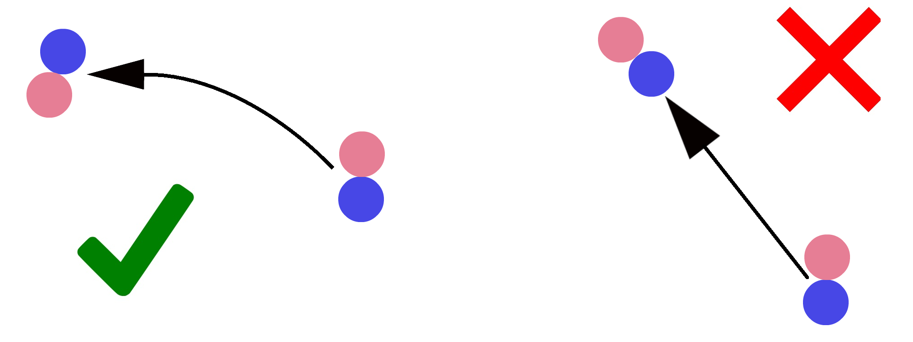

Fallaway Reverse Turn & Slip Pivot 
1 February 2017
As one of the most difficult figures in the Syllabus, the Fallaway Reverse Turn & Slip Pivot has cause immeasurable anguish for students of dance across the world. Learning to get around your partner properly is challenging, but this figure is essential to dancing, showing up in Waltz, Tango, Foxtrot, and even Paso Doble! Although many dancers know they have trouble with this figure, sometimes problems can arise in a more insidious way. If you have a Fallaway Reverse Turn in your routine followed by another figure that turns to the left, and that following figure gives you trouble, it is likely stemming from not getting enough rotation on the Fallaway Reverse Turn. This article will serve to help you get around your partner properly, and hopefully make one of the most difficult and beautiful figures in all of Standard actually enjoyable.
Direction of Movement (Steps 1-3)
One problem dancers often have with this figure is that they travel in a straight line, whereas the figure needs to curve. Two weeks ago an article was published on the Inside and Outside of Turns,, and if you haven't read it yet, take a few minutes to read it first, as the principles discussed therein are vital to the performance of this figure.
To curve this figure, the first step should travel DC, the second slightly more toward Centre, and the third step should travel straight toward Centre. By curving, the couple ends up so that the Man is farther down LOD than the Lady. This is extremely important, because the Fallaway Reverse Turn starts with the Lady more LOD than the Man, and they complete one full revolution around each other, ending back the in the same place. Just by curving the figure, the Man already ends up more down LOD, essentially completing half of the total revolution over the first three steps, and allowing the Slip Pivot to handle the other half. Without curving the figure, the Man would end up not getting around the Lady enough, and the Slip Pivot would be charged with completing way more turn than is physically possible, resulting either in a state of being off balance, or not being able to make the full amount of turn.
Because the Lady is on the inside of the curve, she needs to take smaller steps, especially when she crosses behind on step 3. If she doesn't take smaller steps, she can easily keep speed with the Man, and straighten out the curve.
Alignment (Steps 1-3)
Just as important as the direction of movement is the alignment. Step 1 is taken with the Man facing DC and the Lady backing DC in Closed Position, but on step 2 the couple opens to Fallaway Position. This is where things typically start to go wrong. The traditional method for dancing this figure has the couples travel down LOD in Fallaway Position, which means the Man will be backing DW and the Lady backing DC. This, however, does the opposite of what was discussed in the previous section, and will hinder rotation. Instead, try to take step 2 in the same direction as step 1 or even a little more toward Centre. This will cause the Man to be backing LOD in the feet (with his shoulders turned toward Lady in Fallaway Position, so his shoulders are backing almost DW), and the Lady to be backing Centre in the feet (with her shoulders turned toward the Man in Fallaway Position, so her shoulders are backing almost DC against LOD).
On step 3, the couple will remain in Fallaway Position, but the entire partnership will turn by 1/8 to the left. As discussed above, this means the Man has to travel farther to get around the Lady, and so the Lady's step here is very small. At this point, the Man should be backing DC in the feet, with his shoulders backing LOD, and the Lady should be backing DC against LOD in the feet, with her shoulders backing against LOD. In this position, they are essentially in Promenade Position as if to travel straight toward the Wall (remember Fallaway Position is just what Promenade Position is called when moving backward. For more on the positions, click here).
The Man's Pivot
Now that the Man is in the correct alignment on step 3, he need only turn an additional 3/8 to the L to end facing LOD. This turn occurs in two separate parts. First, between steps 3 and 4, as the RF starts to pull back and as you stand on the Ball of the LF, turn to face Wall, and bring your frame back in front of you to take the Lady from Fallaway Position into Closed Position. From here, cross the RF behind the LF in an extremely small step, ending up with the weight on the RF, and the LF crossed in front almost as in a Latin Spiral Position, turning the final 1/4 to the Left. You should be facing LOD.
The Lady's Pivots
No, there is no spelling mistake in the title of this section. The Lady doesn't have a pivot, she has two, and ignorance of this fact will make this figure next to impossible. The first Pivot occurs on the RF, at the end of step 3, and before the LF touches the ground on step 4. Standing on the ball of your RF, turn 3/8 to the L to face Centre, changing positions from Fallaway Position to Closed Position. It is important to remember here that although you are high on the Ball of your RF, the LF remains crossed in front without weight, just as in a High Spiral Action in Latin.
Next, the LF will take step 4 while remaining crossed in front of the RF. From here, pivot on the ball of the foot an additional 1/4 to the L. Remember to keep the heel in contact with the ground, but without weight so it swivels around the Ball of the foot. You should be backing LOD.
NB: Digression from The Book
At Ballroom Guide, we typically discuss what is said in "The Book," meaning the explicitly stated way things are traditionally done, however, sometimes the Book doesn't have all the answers. Such is the case here. When most classical technique books were written, the Fallaway Reverse Turn & Slip Pivot was meant to commence facing DC and end facing DW (or sometimes LOD), but nowadays couples want to add more rotation, and want to make a full revolution, rather than just 3/4 of a revolution. The book doesn't have the answer for this, so if your choreography turns one full revolution, you should give the method above a try. If your choreography turns only 3/4, and if you would like to dance this figure according to the book, here are the links to the technical descriptions in Waltz, Tango, Foxtrot, and Paso. We won't be discussing the differences between what the Book says and the method that turns more easily in this blog, so feel free to compare and figure it out for yourself (actually the one in Paso Doble is very close to the method described above).